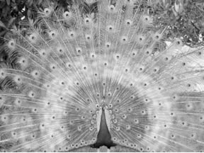
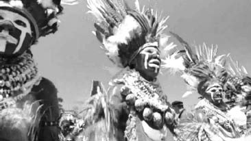
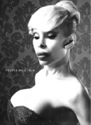
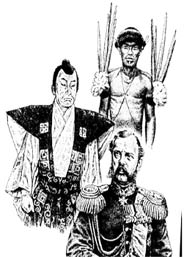
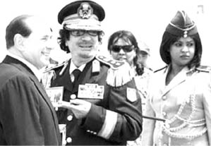
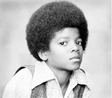
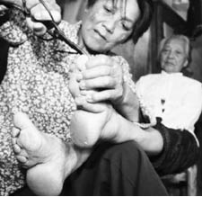

5. BÖLÜM
KİŞİNİN FİZİKSEL ÖZELLİKLERİ
Doğada fiziki görünüm her şeydir. Fiziki görünüm sayesinde dişiye kur yapılır, çiftleşme sağlanır ve tür devam eder. Yine fiziki görünüm sayesinde rakipler karşısında üstünlük sağlanır; caydırıcılık elde edilir; bazen kavgalar başlamadan biter. Hayvanlar yememeleri gereken zehirli hayvan türlerini çarpıcı renklerinden tanır ve uzak dururlar. Diğer yandan da, fiziki görünümleri sayesinde bu tip hayvanlar av olmaktan kurtulur ve hayatta kalır. Fiziki görünümleri sayesinde baskın hayvana karşı kendilerini çekinik gösterip saldırıdan kurtulurlar. Fiziki görünümleri sayesinde yavrularına sahip çıkarlar. Yavrular da bu fiziki görünümleri sayesinde hayatta kalırlar. Hayvanlar bizim bildiğimiz anlamda konuşamazlar. Yunus balığı ve balina gibi bazı türlerde konuşma benzeri sesli bir iletişim olduğu bilim insanları tarafından tespit edilse de, bunlar sadece istisnai durumlardır. Bu nedenle hayvanlar birbirleriyle esasen fiziki görünümleri ve daha ileri hayvanlar ise sözsüz iletişim becerileri sayesinde iletişim kurar. Kısacası hayvanlar âleminin iletişim dili sözsüz iletişim, büyük oranda da fiziksel özelliklerin ilettiği mesajlardır.
Fiziki görünüm, başlı başına bir mesaj kaynağıdır. Tabiat türlerin sağlıklı bir şekilde devamını sağlamak için, erkeklere kur yapma ve kendini dişiye beğendirme sistemini kurmuştur. Bu sayede en sağlıklı erkekler seçilir ve sağlıklı nesillerin devamı sağlanır. Sağlıksız ve güçsüz erkekler seçilmez ve çoğunlukla çiftleşemez. Böylece de sağlıksız gen devam etmez.
Tüm canlıların erkek cinsi, genel olarak süslüdür, bu herkesin bildiği bir gerçek. Aslanın yelesi, tavus kuşunun güzel ve renkli tüyü, lepistes balığının renkli kuyruğu, horozun ibiği, hindinin kabarık tüyü ve bunun gibi hemen hemen her türün erkek cinsinde, dişiyi cezp eden güzel bir fiziki özellik vardır ki, insan da o özellikleri görür ve beğenir. Siz hayvanat bahçesinde dişi tavus kuşunun önünde seyirci gördünüz mü? Herkes yelpazesini açmış olan erkek tavus kuşunu görmek ister.
Erkek fiziksel özellikleri dişiye şu mesajları verir: “Bak, yelelerim uzun ve parlak, kürküm de öyle. Kuyruk tüylerim ne kadar canlı ve renkli. İbiğim ne kadar kırmızı ve canlı duruyor. Ben sağlıklı ve güçlü bir erkeğim. Çiftleşmeye hazırım. Bütün rakiplerimi saf dışı bıraktım. Seninle çiftleşmeye layık bir erkeğim.”
Dişi tür de önündeki seçenekler arasından, içgüdüsel olarak fiziksel özellikleri en üst düzeyde ve diğerlerinden en baskın olanı eş olarak seçer, çünkü dişi de bu görünümden benzer mesajları alır ve karar verir.
Bazı türlerde erkek, fiziki özelliklerini dışarıdan temin eder. Bazı kuş türleri, yaptıkları yuvalarla dişilerini çekmeye çalışırlar. Yuvanın büyüklüğü, sağlamlığı ve çevreden toplayıp getirdiği ilginç cisimlerle, dişiye çiftleşmeye hazır olduğu, yuvasına ve çocuklarına bakabileceği mesajını verir.

Erkek tavus kuşunun çekici özellikleri.
Bazı türler, çiftleşmek için ilginç kur dansları yaparlar. Bunu bazen de dişinin önünde, diğer erkeklerle yarış halinde gerçekleştirirler. Figürler ne kadar değişik ve zorsa, ne kadar uzun süre sürdürebiliyorsa, dişiyi o denli çeker. Yapılan figürler, dişiye erkeğin ne kadar sağlıklı olduğu mesajını verir.
Erkekler arasında baskınlık, öncelikli olarak fiziksel görünümle kendisini gösterir. Genel olarak bütün türlerde, baskın erkek kabilenin en uzunu, en irisi, tüyleri en uzun ve parlak olanı, renkleri en canlı olanı, dişleri en keskin olanı olarak sayılabilir. Baskınlık hayvanlarda önemlidir, çünkü kural olarak baskın erkek, çiftleşme ve soyunu sürdürme şansına sahiptir. Türler kendi içlerindeki çekişmelerde hemen kavgaya soyunmazlar. Hayvanlarda öncelik, fiziki olarak caydırmaktır. Kavgaya ve rekabete hazırlanan hayvan öncelikle kendisini daha iri gösterir. Hayvanların birçoğunda tüyler dikilir, duruş dikleşir, kanatlar varsa açılır, bazı kuş türlerinde boyundaki nefes kesesi şişirilir, yılanlarda olduğu gibi dikilir ve boyun kısmı genişler. Primatlar gibi ileri hayvan türlerinde belli yüz ifadeleri de devreye girer ve tüm bunlarla karşıdaki rakip kavgadan caydırılmaya çalışılır. Eğer fiziki özellikler de yeterli olmazsa kavga kaçınılmaz bir hal alır.
Böceklerin bazıları zehirlidir.111 Bu böceklerin zehirli oldukları, kullandıkları birtakım tehlike işaretleriyle belli olur. Örneğin eşekarısı, sarı siyah çizgileriyle kendini kendi türünden ayırır. Böcek yiyen hayvanlar onun fiziki özelliklerinden zehirli olduğunu bilirler ve yemezler. Çünkü fiziki özellikleri onun zehirli olduğu, yenmemesi gerektiği mesajını verir. İşin ilginç yanı bazı zehirli olmayan sinek türleri de zamanla eşekarısının renklerini taklit etmişlerdir. Onlar da çevrelerine zehirli oldukları şeklinde, doğru olmayan bir mesaj iletirler ve böcek yiyen hayvanlar bunlara da yaklaşmazlar. Yani verdikleri yalan mesajlarla diğer hayvanları kandırırlar.
Zehirli mesajını veren ve uyaran hayvanlar böceklerle de sınırlı değildir. Denizlerde yaşayan bazı zehirli ya da elektrik şoku veren balıklar da çarpıcı renklere sahiptir. Bu sayede düşmanları onlardan uzak durur. Zehirli denizanaları, zararsız olanların aksine şeffaf değil, renklidir. Görüntüsünden zararlı olduğu anlaşılır; anlaşılmazsa da zaten çarpar.
Yabanarısının kuyruğundaki çizgiler, zehirli olduğunu ifade eder.112
Burada, bitkilerin fiziksel özellikleri de aslında aktarılabilir. Örneğin et yiyen çiçeklerin, güzel ve çekici renkleriyle ne kadar lezzetli polenlerinin olduğu mesajını vererek böcekleri nasıl çektiği ve bu mesaja kanarak gelen böcekleri nasıl içine hapsederek sindirdiği de anlatılabilir. Ancak kitap genel olarak davranışlara dair olduğundan, bitkilerin bir davranışından bahsedemeyiz. Bu nedenle, bitkilere dair özellikleri aktarmayı gereksiz görüyorum.
Hayvan yavrularındaki küçüklük özelliklerinin ise onları nasıl hayatta tuttuğunu ve türün devamını sağladığını önceki bölümlerde ayrıntılı bir şekilde aktardığımı sanırım.
Bu girişi, fiziksel özelliklerin verdiği mesajların etkisinin tabiattaki etkisinin iyice anlaşılması için yaptım. Şimdi insana gelebiliriz.
İnsan da sözsüz davranış biçimi olarak diğer hayvan türlerinden farklı değildir. İletişim kuranların fiziksel özellikleri, bir başka deyişle iletişimcilerin bizzat kendileri sözsüz iletişimi doğrudan etkilemektedir. İnsanlar farkında olarak ya da olmaksızın kendi fiziki özellikleriyle ve üzerine ekledikleriyle çok ciddi mesajlar vermektedirler.
“İnsanlar kıyafetleriyle karşılanırlar, fikirleriyle uğurlanırlar...” sözü, fiziksel özelliklerin ne denli önemli olduğu konusunda iyi bir tanımlamadır. Nasreddin Hoca’nın fıkrada “Ye kürküm ye!” diyerek bahsettiği de, fiziksel özelliklerin iletişim kurma, sürdürme ve statü gösterme anlamında göz önünde tutulması gerektiği ve ne kadar hayati olduğudur.
Fiziksel Özelliklerle Kur Yapma Davranışı ve Statü
İnsanlar, kur yapmak ve karşı cinsi etkilemek için fiziksel özelliklerini oldukça yoğun bir şekilde kullanırlar. Esasen doğada, diğer hayvan türleri gibi, insanın erkek türü de karşı cinsi etkilemek için farklı fiziksel özellikleriyle yaratılmış ve donatılmıştır. Erkek, kadına göre çok daha iridir, kaslıdır. Vücudu tüylerle, kıllarla, sakal ve bıyıkla kaplıdır. Kolları ve bacakları uzun ve güçlüdür. Sesi kalındır. Kısacası erkeklerin kadınlara göre farklı özellikleri, onların kadınlara karşı kur yapmak için kullandıkları silahlarıdır.
Ancak insanı diğer türlerden ayıran, düşünme gücüdür elbette. Bu sayede kadınlar da erkekleri etkilemek için fiziki birçok özellik bulmuşlar ve yapay olarak bunları vücutlarına eklemişlerdir. Bu, en azından benim bildiğim kadarıyla, başka bir türün dişisinde olmayan bir özelliktir. Kadınlar, kozmetik ve plastik pek çok yapay özelliklerle erkeği etkilerler. Bunun için saçlarını farklı renklere boyarlar; makyaj yaparlar; kendilerine göre çekici olmayan bazı uzuvlarında, plastik cerrahinin yardımıyla farklılık yaratırlar. Bu sayede, kadın da erkeğe fiziksel özelliklerini kullanarak kur yapabilir.
İlkel insan topluluklarında erkekler, kur yapmak için doğayı kullanır. Yeni Gine yerlileri, tüylerinin güzellikleriyle ünlü ve bu tüylerle dişilerine kur yapan cennetkuşları ile Prenses Astrophia kuşlarını tüyleri için avlamaktadırlar. Bu tüyleri yıllar içerisinde biriktirmekte ve geleneksel “Sing Sing” dans festivalinde giydikleri kıyafetlerini süslemek için kullanmaktadırlar. Tüyleri en fazla olan erkekler toplum içerisinde daha saygın bir konuma gelmekte ve dişileri daha fazla etkilemektedirler. Tıpkı kuşlardaki gibi tüylerini daha fazla kabartmakta ve daha uzun görünecek şekilde yükseltmektedirler.113Görünen o ki bu insanlar, fiziksel özelliklerin karşı cinsi etkilemede, yani mesaj göndermede ne kadar etkili olduğunu fark ederek, aynı paralelde hareket etmeye karar vermişlerdir.
Kur yapan erkek ve kadın, önce vücutlarını daha dik konuma getirir. Erkek kendisini daha uzun göstermeye çalışır. Uzun olan kısaya göre her zaman için avantajlı ve baskındır. Hatta bunu anlatan bir karikatür de vardır. Sahilde göbekli ve duruşları kambur, mayolu bir kadın ve bir erkek aksi istikametlerden yürürler. İkinci karede karşılaşırlar ve birden vücut duruşları dikilir, göbekleri içeri çekilir, sağlıklı bir görünüşle birbirlerine bakarak geçerler. Üçüncü karede kendilerine bakan bir karşı cins yoktur artık. Görünümleri derhal eskisine döner.

Yeni Gine yerlilerinin fiziksel özellikleri.114
Evlendirme programlarını hiç izler misiniz? Ben fırsat buldukça bakarım. İkili ilişkiler, kur davranışları, hoşlanma-hoşlanmamaya ait sözsüz davranış biçimlerini orada çok fazla görürüm ve benim için bir çeşit alıştırma yapmak gibidir. Aralarındaki perde açıldığında sözsüz davranışlarından, birbirlerinden hoşlanıp hoşlanmadıklarını ve bir ilişkinin başlayıp başlamayacağını değerlendirmeye çalışırım. Çoğunlukla da tahminlerim doğru çıkar. Sözsüz davranışlar, eğer okumayı bilirseniz asla yanıltmaz çünkü.
Bu evlendirme programlarında erkekler, özellikle yaşlı olanları daha dik yürümeye çalışır. Beden duruşlarıyla aslında nüfus cüzdanında gösteren yaştan daha genç ve sağlıklı olduklarını anlatmaya gayret ederler. Bunu çoğunlukla sözle de ifade ederler. Kadınların birçoğu, yaşlarını gizlemek amaçlı olarak saçlarını boyatır ve ağır bir makyaj yaparlar. Daha gençlere özgü kıyafetler giyerler. Ne kadar çok seyahat ettiklerinden bahsederler. Sonra bir şekilde müzik çalar ve erkekle kadın abartılı hareketlerle oynar, dans ederler. Programda eş arayan kişiye aday olarak başvuran erkek ya da kadın, daha coşkulu bir tarzda dans eder. Erkek de kadın da aslında fiziksel görünümlerini kullanarak basit bir mesaj vermektedir: “Ben hâlâ evlenecek, seni fiziksel olarak tatmin edecek ve evliliğin gereklerini yerine getirecek kadar gencim ve zindeyim.” Bu hareketlerin, doğada dişisine kur yapan erkek davranışından temelde ayrılan bir yönü yoktur. Bunun yanında, yuvasını süsleyen kuşlar gibi, evlerini, arabalarını, nakit paralarını anlatırlar. Bunların da mesajları aslında çok açıktır: “Ben sana bakacak, geçimini sağlayacak ve evlilik yapabilecek kadar varlıklıyım.”
Sahilde görürsünüz bazen. Güneşlenen turist kızların önünde, oğlan çocukları gibi itişip kakışan, birbirleriyle boğuşan gençler görürsünüz. Deve güreşi filan yaparlar, abartılı hareketlerle dikkat çekmeye çalışırlar. Diskoteklerde erkekler, beğendikleri kızların civarında dans ederek, kendilerini gösterirler. Bu daveti kabul eden kadınlar da, abartılı dans hareketleriyle niyetlerini ifade ederler. En temel kur hareketleridir bunlar ve kadınlar, bu mesajları çok net bir şekilde alırlar.
İnsanların fiziksel özelliklerine yaptırdıkları değişiklikler yıllar geçtikçe artmaktadır. Uluslararası Estetik Cerrahi Derneği’nin (ISAPS) 2003 verilerine göre Türkiye estetik ameliyat yaptırma sıralamasında dünyada 18. sıradayken 2010 yılında 12. sırayı almıştır.115 Aynı çalışmaya göre ise estetik ameliyat sıralamasında ABD açık ara birincidir. Dünyada yapılan estetik müdahaleler arasında yağ aldırma birinci sıradayken, ikinci sırada göğüs büyütme ameliyatı gelmektedir. Bu da bizlere şişman bir vücudun vereceği olumsuz mesajların ve iri göğüslerin vereceği olumlu mesajların, insanlar tarafından ne kadar önemsendiğini göstermektedir. Ancak bu güzelleşme isteğinin abartılması olumsuz sonuçlar verebilir. İşin tuhaf tarafı, kişi öylesine kaptırmıştır ki kendisini, bu olumsuzluğun farkında bile olmayabilir.
Kişinin fiziksel özellikleri, hem çevresine mesajlar verirken, hem de kendisini iyi ya da kötü hissetmesine yol açar. Şişmanlık moral bozucudur, genç yaşta kellik çekingenlik yaratabilir. Bu nedenle insanlar her yıl milyonlarca lirayı estetik ameliyatlarına dökmektedirler.

Fiziki değişim, bir erkeğe abartılı bir kadın formu verebilir.116
Erkek için fiziksel özellikler, onun statü sembolleridir. Uzun boy, sağlıklı bir beden, bakımlı saçlar, iyi kıyafetler, son model bir araba, onun statüsünü gösterir. Çoğu zaman çevresindekilere karşı baskın çıkmasını sağlar. Bununla ilgili çalıştığım yerlerden edindiğim bir izlenime göre, fiziki özelliklerin statü etkisi Doğu ve Güneydoğu Anadolu’da çok daha fazla. Oradaki erkekler, özellikle de yeniden evlenerek genç bir kadın almış olanlar, maddi durumu ve sosyal etkisi fazla olanlar için kellik ve saçların beyazlaması bir felaket. Bu nedenle Batı’da erkekler için saç boyatmak çok da tercih edilen ya da kabul gören bir davranış biçimi değilken, bu bölgelerde saçların özellikle kına yardımıyla boyatılması rağbet gören ve eleştirilmeyen bir hareket tarzı. Kel kalan adamlar, asla şapka benzeri şeylerini kafalarından çıkarmıyorlar. Tabii burada, Doğu’da sözsüz iletişimin çok daha yoğun kullanıldığını da hatırlatmak isterim. Bu konudaki görüşlerimi daha sonra aktaracağım.
Estetik ameliyatlarında aşırılık,son derece olumsuz sonuçlar da verebilir.117
Batı’da ya da büyükşehirlerde, insanların statü göstermeleri ve etraflarına üstünlük sağlamaları için birçok enstrüman vardır: İyi bir iş, başarılı bir kariyer, pahalı kıyafetler ve aksesuvarlar, etkili arkadaşlar, bir villa, belki bir yat. Bunlara sahip olan erkeğin, saçının ya da göbeğinin olup olmamasının pek bir önemi yoktur. Fiziksel özellikler, bunların olmadığı yerlerde ön plana çıkarlar. Yaşlılığında saç boyatan insanlara dikkat edin lütfen. Bunlar genellikle statü ve gençlik iddiasında bulunmaya devam eden ama statüsünü gösterecek fazla bir şeyi olmayan kişilerdir. Böyle normal-üstü gençlik118 iddiasında bulunan insanlar genellikle saçları dökülmüşse peruk kullanırlar, dökülen dişleri yerine takma diş takarlar, göbeklerini belli etmesin diye korse bile giyerler.
Hayvanlarda statü belirten fiziksel özelliklerden birisinin irilik ya da kendini iri göstermek olduğunu belirtmiştik. Bizler de tehdit ederken ya da kavgaya hazırlanırken kollarımızı içeri doğru çeker ve omuzlarımızı dikleştiririz. Aynı zamanda küçük kaslar tüylerimizi yukarı kaldırır. Aynı davranış, şempanzelerde de görülmüştür. Tek fark onların bedenlerini saran kılların da havaya dikilmesi ve kendilerini daha iri göstermesidir. İnsan vücudundaki kıllar evrimle birlikte dökülerek azalmıştır. “İnsanlar bu çarpıcı dönüşüm gösterisini yitirmişlerdir.”119 Buna karşın yine de erkekler yapay eklemelerle benzer görüntüleri sağlamaya çalışmaktadırlar. Resimde görüldüğü üzere Waiki yerlileri, omuzlarına dik çubuklar koyarlar. Geleneksel Japon Kabuki tiyatrosunun oyuncularının kıyafetlerinde, omuz kısımları anormal bir şekilde geniş bırakılır. Neredeyse tüm dünyada subaylar omuzlarına apolet takarlar. Tören kıyafetlerinde apoletler daha belirgindir. En üst düzey komutanın omzundaki apolet en gösterişlisidir. Yine askerler, polisler gibi statü gerektiren mesleklerin üniformalarında yüksek şapkalar giyilir. Bu şapkalar kişiyi olduğundan büyük gösterir. Bu tür fiziksel özelliklerin kendiliğinden ortaya çıkan statü mesajları vardır. Diktatörlükle yönetilen muz cumhuriyetlerinin liderlerinin özellikle tören kıyafetini dikkatle incelemenizi isterim. Örneğin, Kaddafi’nin ölmeden önceki son İtalya gezisinde giydiği üniformaya bir bakın. İtalyan Başbakanı Silvio Berlusconi ile hemen hemen aynı boyda olmalarına rağmen, üniforması Kaddafi’yi çok daha baskın bir hale getiriyor. Üstelik Kaddafi son dönemlerinde hep yerel kıyafetlerini giydiği halde, İtalya gezisinde askeri üniformayı tercih ediyor. Yakasına da, İtalyanların asarak idam ettiği, Libya’nın özgürlük savaşçısı lideri Ömer Muhtar’ın, İtalyanlar tarafından zincire vurulduğunu gösteren bir fotoğrafı asıyor. Berlusconi fotoğrafta bir hayli şaşkın ve ezik duruyor. Altta kalmamak için el sıkışırlarken verdiği pozda üstünlüğü kapmaya çalışıyor ama nafile. Kaddafi her haliyle, hatta arkasındaki süslü üniformalı kadın korumalarıyla bile üstünlük mesajları veriyor. “Benim ülkemin kadınları bile, beni düşmanlarımdan korumaya yeter!” şeklinde anlaşılıyor mesaj. Ama sonuçta kadın korumalar da, yıllardır büyüttüğü ordusu da onu korumaya yetmedi ve Arap Baharı ile başlayan, muhalifler ve koalisyon ülkeleriyle olan mücadelesinde yenilerek, en sonunda halkı tarafından vahşice öldürüldü. Kaddafi’nin devrimi gerçekleştirdiği yıllardaki üniforması ile iktidarının sonunda giydiği üniforma arasındaki dramatik fark da dikkat çekicidir.

Kendini iri göstermek için omza eklenen yapay fiziksel özellikler.120
Kaddafi’nin İtalya ziyareti.

Kaddafi ve kadın koruması.
Kaddafi’nin ilk yılları.
Toplumsal olaylara müdahale eden polis ya da jandarma birliklerinin kıyafetlerine bir bakalım. Robocop kıyafeti olarak adlandırılan müdahale kıyafeti, yapı itibariyle personeli olduğundan iri gösterir. Omuzlarında fazladan takılan korumalar vardır. Bunlar, her ne kadar personeli korumaya yönelik olsa da, karşılarındaki göstericilerin gözünü korkutarak caydırma amacını da taşır. Zaten Robocop figürüne de baktığınızda, onu heybetli gösteren ve dikkat çeken fiziksel özelliğin en başta abartılı omuzları ve göğüs yapısı olduğu görülür. Ayrıca toplumsal olaylara müdahalede atlı birlikler de kullanılır. Atların üzerindeki kolluk görevlileri çok daha yüksektedir ve bunların gösterici gruplar üzerinde, belirgin bir sindirme etkisi olduğuna dair araştırmalar mevcuttur.
Film kahramanı Robocop.
Padişahların dev boyutlardaki sarıkları ve yüksek omuzlu kaftanlarının da görüştüğü kişiler üzerindeki etkileri muhtemelen çok fazlaydı. Ayrıca resmi görüşmelerde, tahtta otururlardı. Taht yüksek bir platformda olurdu ve yüksek arkalığı da hesaba katılırsa olduğundan çok daha ihtişamlı görünürdü. Şimdilerde devasa makam koltuklarında oturan üst düzey yöneticiler de acaba aynı mesajı vermiyorlar mı?
Zenginlerin statüsüne özenen insanların, onları taklit etmesi de fiziksel özellikler kapsamında değerlendirilmelidir. Zengin ve yüksek statülü insanların kullanması beklenen bazı giysiler, otomobiller, mücevherler vardır. Pahalı arabalar kullanırlar, pahalı elbiseler giyerler, pahalı mücevherler takarlar. Bunları kullanan kişiler karşılarındakine statüleri hakkında bilgi vermektedirler. Bunlar ticari reklamlarda da, insanların gözlerine sokulur: Zenginsen bunları kullanacaksın, o kadar!
“Bizler, bu reklamların takipçileri olarak; eğer bu kıyafetleri satın alırsak, bu reklamlardaki insanlar gibi olacağımıza ve belki de bu insanlarla arkadaş olacağımıza inandırılırız. Dahası, onlar gibi olmak isteriz.”121
Bu reklamların modelleri ve oyuncuları da hep belli tiplerdir. Time gibi prestijli dergilerin saat, otomobil ya da elbise reklamlarında görürüz. Orta yaş ve üzerinde, beyaz saçlı, fiziği düzgün ve yapılı insanlar gösterilir. Genel zengin tipi klişesine uyan kel ve göbekli adam profili hiç görülmez. Reklamın verdiği mesaj çok açıktır: “Sen de bu saati tak, sen de bu adam gibi karizmatik ol ve sana da kadınlar aynen böyle baygın baygın baksınlar.” Verilen statü mesajı bu kadar net olunca, talep de bir o kadar artar.
Zengin ve yüksek statülü insanlar o saati zaten alır ve takarlar, bunda bir sorun yoktur. Alt kademeden insanlar da bu reklamlardan etkilenerek bu saatlerden takmak isterler. Yaşamından feragat ederek ya da boğazından kısarak, taksitle bu saatin en azından giriş fiyatına sahip birini satın alabilirler. Buna “üstünlük taklidi” adı verilir.122Bu saati takarak alt kademedeki kişi de statü sahibi olduğuna dair mesajlar verebilir ki bu yüksek statülü adamın işine gelmez. Sonuçta o, bir saate boş yere binlerce dolar vermez. Statüler arasındaki uçurumu derinleştirme aracıdır o. O zaman da basit bir hile devreye girer. Yüksek statülü kişiler, piyasaya bu saatin taklitlerini sürerler. Belki iyi bir taklididir ancak asla aynısı değildir. Bu defa alt statülü kişi, bu saate yönelir ve fazla zorlanmadan alır. Kendisini tatmin etmiş olsa da asla karşısındakini kandıramaz, çünkü gerçek olamayacak kadar güzeldir ve kişinin yaşam düzeyi göz önüne alındığında onun gerçeğini takamayacağı bilinir. Böylece yüksek statülü kişiler statülerini korumaya devam ederler ve alt kademenin statü ilgisini başka bir tarafa yönlendirirler.
Hale Etkisi ve Hale Hatası
Kara Harp Okulu’ndaki ilk günlerimizdi. Üç ayrı askeri liseden ve sivil kaynaktan gelen gençler, bir araya toplanmıştık. Bu nedenle, grubun büyük bir çoğunluğunu tanımıyor ve tanımaya çalışıyorduk. O ilk günlerde, birkaç kişinin yakınımda tartıştıklarını gördüm. Aralarından biri, kısa boylu, sivri burunlu, tuhaf bir tipti. Yanındakilerle bağıra çağıra kavga ediyordu. Garip bir aksanla konuşuyor, konuştuklarından pek bir şey anlaşılmıyordu. O gün için, tipi ve hareketleri öylesine itici geldi ki, “Ben bu adamla asla arkadaş olamam, hiçbir özelliğimiz uyuşmaz, en iyisi uzak durayım...” dedim. Tam bir yıl boyunca her yaptığı beni rahatsız etti ve onunla tek kelime bile konuşmadım. Tam bir yıl sonra, tesadüfen bir sohbet yaptık. Daha sonra arkadaşlığımız ilerledi. Fark ettim ki, aslında benim hoşlandığım şeylerden hoşlanan, okuyan, düşünen, ince zevkleri olan, bir hayli entelektüel bir adam. Daha sonra, okul bitene kadar en iyi arkadaşlarımdan biri oldu ve hâlâ da rastlaştıkça uzun soluklu sohbetler yapıyoruz.
Hale Etkisi123 bir kişide ilk gördüğümüz bazı özelliklerin, kişiyle ilgili tüm algımızı etkilemesidir.124Bu etki, kişiye ait sonraki tüm kararlarımız üzerinde etkindir. Geçmişi 1920’lere dayanır ve üzerinde ciddi çalışmalar yapılmış bir konudur. Bahse konu özellikler çeşitlidir, ancak kitabın içeriğine bağlı olarak kişinin fiziksel özelliklerinin yarattığı hale etkisinden bahsedilecektir. İnsanlarla ilk karşılaşmamızda, fikir alabileceğimiz ilk özellikleri yüzleri ve fiziki görünümleridir. Bu nedenle Hale Etkisi’ni başlatan şeylerin başında bunlar gelir. İnsanların yüzlerine ve görünümlerine bakar, geneli hakkında karar vermeye çalışırız. Bu konudaki çalışmaların en başında, subaylardan, personelleri hakkında önce fiziki değerlendirmeler (düzenli olmak, ses, fizik, dayanıklılık ve enerji) yapmaları; daha sonra aynı personelleri entelektüel düzeyleri, liderlik özellikleri ve kişisel kaliteleri (güvenilirlik, bağlılık, sorumluluk duygusu, tek başına iş yapabilme ve işbirliğine yatkın olma) açısından değerlendirmeleri istenmiştir.125Alınan sonuçlar şaşırtıcıdır. Buna göre, fiziksel kıstaslar açısından olumsuz olarak değerlendirilen askerin, diğer özellikleri de olumsuz olarak nitelendirilmiştir. Özellikler arasında, normal kabul edilemeyecek düzeyde bir korelasyon vardır. Dağınık ve düzensiz olarak göze batan personel, sorumluk duygusu, liderlik vasıfları gibi diğer konularda da zayıf olarak nitelendirilmiştir. Yani kişi bir kere fiziki özellikler bakımından göze giremediyse, ağzıyla kuş tutsa dahi hiçbir konuda göze giremeyecektir. Buna da Hale Hatası adı verilir.126 “İlk izlenim çok önemlidir!” cümlesi, şimdi biraz daha anlam ifade ediyor mu?
İlk kez karşılaştığımız insanlar hakkında, elde mevcut çok az bilgiden faydalanarak, karar vermek zorunda kalırız sıklıkla. Çoğu zaman buna mecbur kalırız. Yolda otostop çeken kişiyi, arabamıza alıp almamakta kararsız kalırız. Yavaşlar ve yüzüne, kılığına birkaç saniye için bakarız. Tipinden hoşlanmadıysak, tedirgin olduysak gaza basar, adamı almadan geçer gideriz. Yalnız başına gece saat on birde, metro istasyonunda bekleyen bir kadın olduğunuzu düşünün. İstasyona gelen hangi adam sizi tedirgin eder, hangi tip rahatsız etmez? Gelen kişi kemik çerçeveli gözlüklü, spor kıyafetli, top sakallı, ellerinde kitaplar olan bir genç ise ne hissedersiniz? Ya gelen, kafasını üç numaraya vurdurmuş, yüzünde yara izi, pis sakallı, gözleri kısık, deri ceketli ve sivri topuklu siyah ayakkabılar giyen bir tipse? Kaçmak gelir mi içinizden? Tehlike çanları çalar mı? Neden? Adamı hayatınızda ilk kez ve sadece on saniyedir görüyorsunuz. Peki, aynı adam, yanında küçük bir çocuk ya da bir kadınla gelseydi yine rahatsız olur muydunuz bu kadar?
İlk görüşte aşk deriz, gözüm tutmadı deriz, ten uyuşması deriz. Tüm bunlar aslında, bu anlık karar verme yetilerimizin bir ifadesidir. İlk izlenim127(thin-slicing) bizler için çok önemlidir. Kimi insanların yüzüne bakıp kararlar veririz. “Nur yüzlü” ya da “Yüzüne nur inmiş” tabirleri kullanırız dindar insanlar için kimi zaman. Benzer bir yaklaşımın, Amerikan Mormonlarında da olduğunu öğrenmek, beni oldukça şaşırtmıştı.128Brooke White isimli genç bir kız, televizyonda American Idol (bizdeki Yetenek Sizsiniz Türkiye yarışması) adlı bir yetenek yarışmasına katılır. Dini görüşleri hakkında hiçbir açıklama yapmamasına rağmen, Jesus Christ of Latter Day Saints adlı Mormon kilisesinin üyeleri, bu kızın kendilerinden olduğuna inandıklarını, çünkü kızın yüzünde “Mormon nuru” olduğunu gördüklerini belirtirler. Sonuçta bu yargılar doğru çıkar ve kızın Mormon tarikatının üyesi olduğu anlaşılır. Bizdeki bahsedilen nurun sık aptes alınmasıyla ilgili olduğu sıklıkla savunulur, diğerleri hiç yüzünü yıkamazmış gibi! Orada da, Mormonların sağlıklı yaşamı seçmeleri, alkol almamaları gibi sebeplerin bunda etkin olduğu savunuluyor.
İlk izlenime göre karar vermek çok kesin sonuçlar vermese de, özellikle tehlikenin anlık geldiği durumlar göz önünde bulundurulduğunda, ihmal de edilemez.129Araştırmalar, karşımızdakinin karakterini %60 ve üstü doğrulukla (şans faktörünün üzerinde), yüzünden elde ettiğimiz ipuçları sayesinde tespit edebildiğimizi gösteriyor. Önemli bir oran ve üzerinde durmaya değer. İnsan sarraflarının bıyık altından sırıttıklarını görür gibiyim, “Biz söylememiş miydik?” dercesine. Evet, söylemiştiniz ve bilim sizi kısmen haklı çıkarıyor. Mutlu musunuz?
Fiziksel Özellikler ve Çekicilik
Dünya, bizim algıladığımız kadardır. Hangi çerçeveden bakarsak, ne kadarını algılarsak ve ne kadarını görürsek, dünya da o kadardır. İnsanları da algılayabildiğimiz kadar biliriz. Peki, bunun genel değerlendirmelere etkisi nasıl yansır? 1972’de, 60 üniversite öğrencisine çeşitli kadın ve erkek fotoğrafları gösteriliyor.130Bu fotoğraflardaki insanların bir kısmı çekici, bir kısmı yarı çekici, bir kısmı da çekici olmayan kişilerden oluşuyor. Öğrencilerden, öncelikle bu kişilerin kişilik özelliklerini 27 kıstas altında değerlendirmeleri isteniyor; fedakârlık, geleneksellik, kendini ifade edebilme, duygusallık, dürüstlük vb. Daha sonra aynı öğrencilerden, bu kişilerin genel mutluluk halinden, evliliğinden, aile ilişkilerinden, sosyal hayattan memnuniyetleri konusunda yorum yapmaları isteniliyor. Son olarak da bu kişilerin işlerinde yüksek, orta ya da düşük statüde olup olmadıkları soruluyor.
Sonuçlar incelendiğinde görülüyor ki, çekici görünümlü kişiler, sosyal özellikler bakımından, diğer kişilere göre daha olumlu bir şekilde nitelendirilmiş. Onlar daha nazik, duygusal, dürüst, açık vb. Aynı çekici kişilerin, özel hayatlarında da (evlilik, ebeveyn, iş hayatı gibi) daha mutlu oldukları iddia edilmiş. Son olarak iş durumlarıyla ilgili değerlendirmeler yapmaları istendiğinde ise, çekici kişilerin prestijli işler yaptıkları tahmin edilmiş. İlginç ama bir o kadar da tanıdık değil mi?
Hale Etkisi’nin en fazla kendisini belli ettiği durumdur bu. İyi görünümlü insanlar, kendilerine göre daha sıradan ya da kaba tabirle çirkin görünen insanlardan daha zeki görünürler; üstelik bu paralelliği destekleyecek hiçbir bilimsel veri olmamasına rağmen.131
Sözsüz iletişimi tüm boyutlarıyla inceleyen bilim insanları, iletişim kuran kişinin şahsi özelliklerinin, iletişimin boyutlarını ve kalitesini etkileyip etkilemediğini de araştırmışlardır. İletişim kuran kişinin bizzat kendisi ya da kendi bedenine ait özellikler acaba bir mesaj değeri taşımakta mıdır? Yapılacak birtakım değişiklikler ya da düzeltmeler mesajın içeriğini değiştirir mi? Hal böyle ise karşı tarafın bu mesajı algılaması ne şekilde gerçekleşir?
İnsanlar her ne kadar dış güzelliğin geçici olduğunu, önemli olanın iç güzellik olduğunu iddia etseler de, gerçek durum hiç de böyle değildir. Yapılan birçok çalışma çekici insanların çekici olmayan rakiplerini, kişilik, popülerlik, cinsellik ve ikna edicilik gibi sosyal anlamda arzu edilen birçok alanda geçtiğini göstermiştir.132/133Yani fiziken çekici insanlar, sosyal alanda son derece avantajlıdırlar. Yapılan bir başka çalışma, 2-3 aylık bebeklerin, çekici insanların yüzüne, çekici olmayanlardan daha fazla baktığını ortaya koymuştur. Bu eğilim, annelerinin çekici olup olmamasına göre değişmemektedir.134/135Yani anneleri çekici kadınlar olsalar da olmasalar da, yine de çekici insanların yüzünü daha dikkatli incelerler.
Peki, fiziki çekicilikten kasıt nedir? Bu tanımlamadan anlamamız gereken nedir? Kişiden kişiye ve toplumdan topluma elbette değişiklik göstermekle birlikte, genel kabul gören anlayış,136bir kişinin uzun, ince, Kuzey Avrupa özeliklerini taşıyan, engelsiz ve genç olmasının, o kişiyi çekici kıldığı yönündedir. Bu kapsamda, çekici insanlar; sosyoekonomik istikrar merdivenini tırmanmaya diğerlerine göre daha yatkındırlar.
Güzelliğin ve çekiciliğin kültürden kültüre farklılık gösterdiği düşünülse de, gerçekte durum oldukça farklıdır. Küresel medyanın dayattığı çekicilik kültü, dünyayı etkilemekte ve ortak bir anlayışın oluşmasını sağlamaktadır.137Bu sayede önceleri daha cazip görünen balıketinde tabir edilen kadınların güzel ve çekici olduğu anlayışı, sıfır beden olarak nitelendirilen mankenlerin medya tarafından sürekli göz önüne getirilmesiyle yerini zayıf kadınlara bırakmıştır. Öyle ki, kadınsı özelliklerini neredeyse kaybetmiş, erkeksi hatlara sahip kadınlar, moda dünyasında tercih edilir olmuştur. Avustralya, Avusturya, Çin, İngiltere, Hindistan, Japonya, Kore ve İskoçya’da yaşayan insanları kapsayan bazı araştırmalar, ortak çekicilik anlayışı üzerine anlamlı benzerlikler tespit etmiştir.138/139Yapılan dünya güzellik yarışmalarının da, bu ortak anlayış üzerinde etkili olabileceği değerlendirilmektedir. Bu ortak anlayışın, kültürleri ne denli etkilediği de izlenebilmektedir. Bugün Japonya’da yapılan estetik ameliyatlarının büyük bir bölümünü, kadınların kendi ırklarına özgü çekik gözlerini düzelterek Kafkasyalı beyaz ırka özgü iri gözlere çevirmek için yapıldığı bilinen bir gerçektir. Peki, bizlerin çocukluğumuzdan beri izlediği Japon çizgi filmlerinde, hiç çekik gözlü insanların çizilmemesi, sadece iri gözlü kadınların resmedilmesinin bunda rolü yok mudur? Belki küresel dünyada, başka kültürlerde bu animasyonlara pazar bulabilmek adına yapılan bu çalışmalar, Japon kadınlarını çocukluklarından itibaren, bu yönde etkilememiş midir? Ya Michael Jackson’ın, sağlığını bozmasına neden olacak kadar yoğun bir şekilde hissettiği, tenini beyazlaştırma dürtüsü? Doğaya bu kafa tutma halinin, küreselleşen ve tek tipleşen güzellik anlayışının etkileri olduğu, gün gibi ortadadır.

Michael Jackson’ın çocukluk resmi, ırk özelliğini göstermektedir.140
Michael Jackson’ın ten rengi yıllar içerisinde geçirdiği ameliyat ve tedaviler sonucu Kafkas ırklarınınkine yaklaşmıştır.141
Toplumların güzellik anlayışı, hastalıklı bir hal alabilir.142Çin’de bin yıldan fazla süren bir gelenek, kadınların hayatını yüzyıllar boyunca çekilmez hale getirmiştir. MS 900’lü yılların başında, Çin soyluları arasında, yeniaya benzeyen ve lotus çiçeğiyle benzerlik göstermesi nedeniyle “lotus ayak” adı verilen bir gelenek ortaya çıktı. Buna göre kız çocuklarının daha küçük bir çocukken, ayak parmakları kırılmakta ve çok sıkı bir bandaja sarılarak gelişmesi engellenmektedir. Gelişim çağında yapılan bu barbarca hareket, kadının yetişkinlikte küçük ama yapısal olarak son derece anormal ayaklara sahip olmasına sebep olmaktadır. Üstelik bu normal hareket etmesine de engeldir. Soylular arasında başlayan bu gelenek, daha sonra halk kitlelerine de yayılır. Kadınlar, böyle yaparak daha kolay koca bulduklarını fark ederler ve böylece yaygınlaşır. 1912 yılında yasaklanana kadar gelenek devam eder. Yasaklanmasından sonra da uzun yıllar gizli bir şekilde yürütülür. Güzellik çabasının varabileceği çılgınlığın üst noktasını, çok güzel bir şekilde anlatır.

Lotus ayaklar.
İnsanların çekici olmayan kişilere karşı olan yaklaşımı ise çoğunlukla olumsuzdur. Çekici olmayan kişilerin, hastanelerde daha az ziyaret edildikleri, daha uzun bir süre hastanede kaldıkları, hoşnutsuz olarak nitelendirildikleri ve diğerleriyle daha az birlikte oldukları belirlenmiştir.143Çocukluktan itibaren çekici olan ve olmayanla ilgili ayrımcılık, kendisini göstermeye başlar. Bebeklerle ilgili yargıdan bahsettim. Ya çocuk oyunları? Çocuklar arasında popüler olup sıyrılanlar, genellikle yaşıtlarına göre daha uzun ve daha çekici çocuklardır. Elbette başka sebepler de rol oynar, ancak bu tür çocuklar, çoğunlukla lider pozisyonlarındadır. Fiziksel anlamda çekici olmayan, sıska, şişman ya da kısa boylu çocuklar; gözlük takanlar; diğerlerinden bariz farklı olanlar; fiziksel engeli olanlar; çocuklar tarafından dışlanır ve kötü muamele görürler. İlerleyen yıllarda belki aynı çocuklar popüler olarak kalmazlar fakat çekici olanın acımasız üstünlüğü yine de devam eder. Korku filmleri klişesinde, ormandaki eve eğlenmeye giden gençlerden ilk ölen, gözlüklü ve şişman olan meraklı gençtir. Ek bir bilgi olarak verelim, ikinci ölen ise genellikle cinsel anlamda rahat olan kadın oyuncudur.
Üzerinde sosyal anlamda uzlaşılmış güzellik standartları vardır. Eğer kişi bu standartlarla yaşayamazsa, sıradansa, ya da daha kötüsü çekici değilse sosyal anlamda dışlanır. Sıradan ve çekici olmayan kişiler küçük görülürken, çekici kişiler bile yeterince çekici değillerse utandırılabilirler.144
Çekiciliğin iş bulma, alınan maaş miktarı ve performans değerlendirme üzerinde de çok önemli etkileri bulunmaktadır. Yapılan araştırmalar, çekiciliğin iş dünyasındaki olumlu etkilerini ortaya koymuştur.145/146/147Başvurulan iş başvuranın seviyesine göre yeterli ve ilgili bulunmadığı durumlarda, şartlar eşit ise başvuranlardan çekici olanın işi alması daha olasıdır. İşe girdikten sonra da daha az çekici olan çalışanlar, eğer çok üst düzeyde performans gösteremezlerse diğerlerine göre daha fazla eleştirilebilirler.148
Burada her zaman güzel olan işi kapar demek suretiyle, şirketlerin insan kaynakları bölümlerine çamur atmak gibi bir amaç gütmüyorum. Aynı şeyden bahsetmiyorum çünkü. Profesyonel bir seçim aşamasında, özellikleri birbirine denk iki adaydan bahsediyorum. Bir yanda bakımlı ve taranmış bir saç; özenli ve abartısız bir makyaj; temiz ve duruma uygun bir elbiseyle iş görüşmesine gelen adayın verdiği mesajları düşünün. “İyi bir okuldan mezunum, iş tecrübem ve özelliklerim yeterli, ayrıca özenli, bakımlı biriyim ve bu işime de böyle yansıyacak.” Diğer yandan görüşmeye saçları alelade taranmış; özensiz ve uyumsuz bir makyaj; ütüsü bozuk bir elbiseyle gelen adayın verdiği mesajları gözlemleyelim: “İyi bir okuldan mezunum, iş tecrübem ve özelliklerim yeterli. Ancak son derece bakımsız, özensiz ve ilgisiz biriyim. İşe girme aşamasında bile kendime ancak bu kadar dikkat edebildim. Artık iş hayatındaki titizliğimi siz düşünün.” İK yöneticisi olsanız, siz hangisini tercih ederdiniz? Belki gerçek hayatta o pasaklı çalışan işinde son derece titiz ve ilgili olabilir (her ne kadar ben mesleki tecrübemle bunun doğru olmadığını düşünsem de). Fakat verdiği sözsüz mesajlarla, fiziksel çekiciliğe ve bakımlılığa sahip kişinin bu konuda öne geçeceği ortadadır.
Çekici olmak, iş hayatında ciddi bir avantajdır.149
Fiziki Çekicilik ve İkna
Yapılan bazı araştırmalar, çekiciliğin karşı tarafı ikna etmede yardımcı olabileceğini ortaya konulmuştur.150 İkna tanımı, iletişim bilimi disiplininden hareketle şöyle yapılabilir:151
“İnsanlar arası ikna, bilgi, duygu, düşünce, tutum ve kanılarla davranış biçimlerinin, kaynak ile alıcı arasındaki bir ilişkileşme yoluyla bir insandan diğerine bazı kanallar kullanılarak ve değişim amacıyla aktarılması sürecidir.” Yani daha az bilimsel bir dille anlatırsak; kişinin kendisine ait duygu, düşünce ve davranış kalıplarını, karşısındakini çeşitli yol ve yöntemlerle etkileyerek, etkileşimde olduğu insana geçirmesidir.
Filmlerden gördüğümüz kadarıyla, Amerika’da emlak komisyoncuları, bunun etkisini ilanlarında kullanıyorlar. Güzel ve çekici kadın ya da erkek çalışanların resimleri de ilanlara asılıyor. Sanırım bu ikna edicilik prensibinden hareket ediyorlar. Bizde de bu yöntem kullanılıyor ama ben daha görünümüyle dikkat çeken bir kadın ya da erkek emlak komisyoncusu ilanına rastlamadım. Aksine evden de soğutabilir. Keçiören’e yolu düşenler, beni daha iyi anlayacaktır.
Bir malın fiyatı arttıkça, satıcıların da görünümü değişmeye başlar. Mahmutpaşa ya da Çıkrıkçılar Yokuşu’nda kazak satan satıcının görünümü çok önemli olmayabilir, kendi tercihidir. Hatta çok abartılı giyinen ve görünen satıcılar, müşterilerinden bu anlamda eksi puan da alabilirler. Ancak iş merkezlerindeki mücevher satıcılarına ya da otomobil galerilerindeki satış temsilcilerine baktığınızda durum çok değişir. Oradaki satıcılar genel manada gayet çekici ve bakımlı insanlardır ve bunun satışta çok büyük bir etkisi vardır.
Satıcının, sattığı ürünle paralellik göstermesi, çoğu zaman tercih edilen bir durumdur. Dövme yapan adamın üzeri genellikle reklam tabelası gibidir. Pahalı takım elbiseler satan mağazaların satıcıları da genellikle böyle giyinir. Bazen, bilinen markaların satıcılarının son derece bakımsız, fiziken yetersiz ve özensiz satıcılarını görüyorum ve bunun etkisini kendimde gözlemliyorum. Markanın ününe son derece olumsuz bir katkı sağladığını değerlendiriyorum.
Hızlı konuşan bireyler, daha fazla ikna edicidirler.152 Ayrıca ses tonu ve ritmi daha az değişen, monoton bir tarzda konuşan insanlar daha az ikna edici bulunurken; yüksek sesle yapılan açıklamalar daha ikna edici bulunmuştur. Bu, başarılı pazarlamacıların en önemli etkisidir. Ne satarlarsa satsınlar gayet seri ve hazırlıklı bir şekilde konuşurlar, karşılarındakine düşünme fırsatı fazla bırakmazlar. Satışın sonunda belki hiç alakanız olmayan bir şeyi almaya karar vermiş olursunuz ama iş işten geçmiştir.
Başarılı pazarlamacılar, tur ya da devre mülk satıcıları genellikle seri ve takılmadan konuşan insanlardır. Zekidirler aynı zamanda, aklınıza anlık olarak gelen tuzak sorulara her zaman için verecek bir cevapları vardır. Kekelemezler, konuşma hataları yapmazlar. Böylece sizin fazla düşünmenize zaman kalmaz. Bir de üzerine “Gerçekten de adam doğru söylüyor, meğer ben tüm hayatım boyunca bu Kızılcahamam kaplıcasında devre mülk istermişim de haberim yokmuş!” dersiniz ve günün sonunda bir devre mülk sahibi olarak bulursunuz kendinizi.153
Çevre iletişimiyle ilgili bölümde anlattığım, bir yöneticimin denetlemesi vardı hatırlarsanız. O gün gerçekten de kötü geçen bir gündü. Bana onlarca soru sordu, her cevap yeni bir soru yarattı; keyifsizliğim de eklenince denetleme felakete dönüştü. Başka bir şehirde çalışırken, tesadüfen yine aynı yöneticim denetlemeye geldi. Üstelik denetleme öncesi, bir önceki denetlemeyi unutmadığını da hissettirdi. Ama bu sefer hazırlıklıydım. O kadar seri bir şekilde brifing verdim ki soru sormasına fırsat kalmadı. Bir saatten fazla bir süre, topu topu on iki köyü olan ilçeyi anlattım. O da zaten işe hâkimiyetim olup olmadığını sorguluyordu. Sanırım ikna oldu, iki saat boyunca yalnızca bir soru sordu ve teşekkür ederek ayrıldı. Ben uyguladığı taktiği artık çözmüştüm, ara verdiğim anda soru sormaya devam edecekti, fakat bu fırsatı bulamamıştı ya da gerek duymamıştı.
Televizyonlarda, Amerikan tarzı uzun pazarlama reklamları, daha doğrusu ürün tanıtım programları vardır. Burada genellikle bir kadın ve bir erkek tanıtım yapar. Uzun bir süre hiç durmadan ve çok hızlı bir tempoda konuşurlar. Tanıtımın sonunda çekiç bile satıyor olsalar, dünyanın en iyi çekicinin tanıtımını izlemiş gibi olursunuz. Şimdilerde aynı reklam türü Türk televizyonlarında da görülmeye başlandı. Fakat bir fark var: Amerika’daki programlarda profesyonel oyuncular görev alıyor, Türk ürünlerinin tanıtımlarında ise çoğunlukla bu formata uygun olmayan, şirketin sözde genel müdür, satış müdürü gibi tipler kullanılıyor. Ağzını açmaktan bile âciz olan bu adamların tanıtımları da haliyle çok fazla ikna edici olmuyor.
Bir diğer araştırma iletişim kuran kadınların çekiciliğinin, ikna etmeye katkısı üzerine yoğunlaşmıştır.154Yapılan araştırmada bir grup erkek göstermelik bir anket çalışmasına katılmışlardır. Katılımcılara bir “gönüllü” bu anketi yüksek sesle okur ve yazılanları izah ederse anketin daha çabuk bitebileceğini önermiştir. “Gönüllü” aynı kadının çekici hali ve çekici olmayan halidir. Çekici halinde kadın görünümü ve fiziğiyle hoş bir görüntü çizerken; aynı kadın, çekici olmayan halinde bol kıyafetler, yağlı bir saç ve bıyık tüyleriyle katılımcılara gösterilmiştir. Araştırma sonunda, çekici olan kadının anketi izah ederken kitlenin düşüncelerini daha çok değiştirdiği ortaya çıkmıştır. Bu da, çekiciliğin ikna üzerindeki etkilerini göstermektedir.
Çekicilik ve ikna bağlantısını, pratik bir örnekle tamamlayayım. Özellikle köylerde yürütülen bir pazarlama çalışması var. Buna göre bir minibüs dolusu insan, bir köye baskın yapıyor. İçlerinde bir grup kadın var. Bunlar, yaşları nispeten genç ve o ortama göre çekici, ağzı da iyi kötü laf yapan kişiler. Önce kadınlar, bir ya da iki kişi olarak evlere dağılıyor. Yaşlı kadın ve erkekler başta olmak üzere kurbanlarını seçiyorlar. Tatlı dille başlayıp (evde gelinlik kızı ya da evlenecek oğlu olan kişilere), bu devirde çeyiz düzmenin ne kadar zor olduğundan dem vuruyorlar. Daha sonra ellerindeki kartlardan birini çektiriyorlar ve müdürümüz gelmeden açma diyorlar. Müdür, üzerindeki ucuz Ulus işi takım elbisesi, temiz tıraşı ve yılışık gülümsemesiyle geliyor. Kadınların verdiği güven ve ikna sinyallerinden sonra, geldi mi ikinci ikna aracı? Daha sonra “Şansa inanır mısın Ayşe Abla?” diye soruyor müdür (gerçek bir soruşturmadan alınan cümledir). Ayşe Abla ne kadar şanssız bir insan olduğunu anlatmaya çalışırken, müdür ona bileti gösteriyor ve “Ama şans sana da güldü, bak bizden bu kocaman müzik setini kazandın!” diye resmi gösteriyorlar. Tabii bu seti alabilmesi için küçük de olsa bir mal almalıdır onlardan. Böylece bir liralık uyku seti, dört katı fiyatına ve taksitle Ayşe Abla’ya satılıyor. Ellerinde şu anda müzik seti kalmadığı ve postayla yollanacağı söyleniyor. O set ya hiç gelmiyor, ya da son derece kötü bir mal gönderiliyor. Satış yapan ekip asla bir daha oralarda görülmüyor, fakat tahsilata gelen tipler ne çekici kadınlar, ne de yakışıklı müdürler oluyor. Sanırım cümlenin devamı, gelişinden anlaşılıyor.
Kadın her zaman için ikna edicidir. Kumral ve yeşil gözlü kadın daha fazla ikna edicidir. Bu ikna olma durumu, kadın ve erkek için aynı oranda geçerlidir. Hedef kitleyle aynı dilden konuşmak, benzer tecrübeleri yaşamış olmak, aynı kaderi paylaşmak önemlidir. Erin Brockowich filminden hepimiz hatırlarız.155Erin, ENRON şirketine dava açabilmek için insanları ikna etmeye çalışır. Oldukça başarılı olur. Dava süreci ilerleyince, daha büyük bir avukatlık bürosu işin içine girer. O büro da başarılı ama bir o kadar burnu büyük bir kadın avukatı, insanlarla görüşmesi için yollar. Kadın onlarla görüşmeyi ve ikna etmeyi başaramaz. Oysa Erin, onlardan biri gibi görünerek ve “Ben bu avukatlardan nefret ederim!” diye söze başlayarak, hepsiyle oldukça sağlıklı ilişkiler kurmayı başarmıştır.
Sonuç:
Sonuç olarak şunu söyleyebiliriz ki, iletişimde bireyin her türlü fiziksel özelliğinin bir mesajı vardır. Bu özellikler kişinin doğal, yani bedensel özellikleri de olabilir, sonradan eklediği dövme, saç ya da sakal biçimi de olabilir, elbise, takı, kullandığı araba şeklinde fiziksel özellikler de olabilir. Kişi bu mesajların her zaman için farkında olmaz ama çoğunlukla karşısındaki bir mesaj alır. Bu mesajlar istem dışı olabileceği gibi yanlış da yorumlanabilir. Sonuçta siz istemeseniz de bazen karşınızdaki bazı mesajları algılar. Sözsüz iletişim her zaman için bilinçli yönlendirilen bir iletişim biçimi olmadığı gibi, çoğunlukla farkında olunmadan ortaya çıkan bir iletişim türüdür. Bu nedenle eğer kurduğunuz iletişim o an sizin için çok önemliyse, vereceğiniz mesajlara çok dikkat etmelisiniz. Geçmişte bıyıkların nasıl siyasi semboller haline geldiğini ve ne kavgalara, ölümlere yol açtığına ben yetişemedim elbette, ancak etkilerini hâlâ da görebilmekteyiz. Siyaset bir semboller savaşıdır ve siz istemeseniz de birtakım özelliklerinizle yaftalanabilirsiniz.
Siyasi kavgaların çok yoğun olduğu 70’lerde, adamın çok sevdiği bir papağanı varmış. Konuşkan bir kuşmuş ve şarkı türkü dahi bilirmiş. Bir gün sahibi, onu havalansın diye kapının dışına koymuş. Kuş açık havayı görünce aşka gelmiş ve belli bir siyasi görüşe ait bir türkü patlatmış. Tesadüf bu ya, o sırada sokaktan karşıt görüşün adamları grup halinde geçmekteymiş. Türküyü duyunca çok sinirlenmişler. Kuşu dövecek halleri yok, bu türküyü sen öğrettin diyerek evi basmışlar ve zavallı adamı çok kötü dövmüşler.
Adam çok üzülmüş ama kuşa da kıyamamış. Tembihlemiş ona, sakın bir daha bu türküleri söyleme diye ve ertesi gün yine hava alması için dışarı çıkarmış. Kuş türküye karşı tembihli ya, bu sefer de bilmeden karşıt görüşe ait bir marş okumaya başlamış yanık yanık. Tesadüf, diğer grubun adamları bu sefer de sokaktan geçmekteymiş. Çok öfkelenmişler ve adamı yine bir temiz dövmüşler. Adam da artık öfkelenmiş ve kuşu tuttuğu gibi arka bahçedeki tavuk kümesine kapatmış, aklı başına gelsin diye. Papağan şaşkın, ortada dikiliyor, canları sıkılan tavuklar ise bu rengârenk ve yakışıklı erkek kuşu görünce hoşlanarak yanaşmaya çalışıyorlar. Papağan ise bu kocaman kadınların ilgisinden rahatsız, yerini de yadırgamış, durmadan onlardan kaçıyor. Bakıyor ki durmayacaklar, zaten canı da sıkkın, bağırıyor hepsine:
“Yeter ulan! Ben sizin gibi buralara fuhuştan düşmedim. Siyasi suçtan düştüm, siyasi suçtan!”
Fiziksel özellikler de işte aynen böyle sonuçlara yol açabilir. Çok zeki bir adamsınızdır ama aynı zamanda çok pejmürdesinizdir. Kimselere anlatamazsınız derdinizi. Kişisel farkındalığın bu konuda çok önemli ve belirleyici olduğunu değerlendiriyorum. Özellikle karşımızdakilerin fikirlerinin önemli olduğu durumlarda, kendi verdiğimiz mesajların farkında olmalı, gerekli düzeltmeleri yapmalıyız.
111 Morris, D. (2008). İnsanat Bahçesi. Orijinal adı: The Human Zoo. İlk basım: 1985. Çev. Nuran Yavuz. İstanbul: İnkılap Kitabevi, 68.
112 http://www.kaliteliresimler.com/img22178.htm adresinden 28.10.2012 tarihinde indirilmiştir.
113 Jones, T. H. (2011). Human planet-Jungles-People of the trees. BBC/Discovery Channel France Television Co-Production, 17. dakika.
114 Jones, T. H. (2011). Human planet-Jungles-People of the trees. BBC/Discovery Channel France Television Co-Production adlı filmden alınan bir sahnedir.
115 Uluslararası Estetik Cerrahi Derneği resmi web sayfası. 21.01.2012 tarihinde şu adresten ulaşılmıştır: http://www.isaps.org/files/html-contents/ISAPS-Procedures-Study-Results-2011.pdf
116 http://www.adrants.com/2008/08/jawbone-ad-highlights-beauty-of.php adresnden 28.10.2012 tarihinde indirilmiştir.
117 http://www.estanbul.com/2-milyon-dolarlik-yuz-67993.html adresinden 28.10.2012 tarihinde indirilmiştir. “Amerikalı dolar milyarderi Aleks Wildenstein’in eski eşi Jocelyn, genç ve güzel görünmek amacıyla yüzüne, 7 kez estetik ameliyatı yaptırdı. 2 milyon dolar harcadığı estetik operasyonları sonucunda bu hale geldi. Eşi yüzünün bu halini görünce, evlilik de bitti.”
118 Morris, D. (2008). Age., 218.
119 Morris, D. (2009). Çıplak Adam. (Çev. Elhüseyni, N.) İstanbul: NTV Yayınları, 34.
120 Eibl-Eibesfeldt, I. (1971). Love and hate. The natural history of behavior patterns. New York: Holt, Rinehart and Winston adlı kitaptan alınmıştır.
121 Berry, B. (2008). Power of looks: Social stratification of physical appearance. Abingdon, Oxon, GBR: Ashgate Publishing Group, 18.
122 Morris, D. (2008). Age., 71.
123 “Halo Effect.” İlk kez psikolog Edward Thorndike tarafından kullanılmıştır. Thorndike, E. L. (1920). A constant error in psychological ratings. Journal of Applied Psychology, 4(1), 25-29.
124 Bak, P. M. (2010). Sex differences in the attractiveness halo effect in the online dating environment, Journal of Business Thorndike, E. L. (1920). Age. and Media Psychology, 1, 1-7, 1.
125 Thorndike, E. L. (1920), Age.
126 Thorndike, E. L. (1920), Age.
127 “Thin-slicing”, yani birisi hakkında, elde mevcut çok az sayıda, özellikle fiziki görünümünden kaynaklanan özelliklere dayanarak karar verebilme yetisi. Terimi il kez Ambady ve Rosenthal isimli araştırmacılar kullanmıştır. Ambady, Nalini and Robert Rosenthal, “Thin slices of expressive behavior as predictors of interpersonal consequences: A meta-analysis”, Psychological Bulletin, 111:2 (1992), 256–274.
128 Pincott, J. (2012). What’s in a face? Psychology Today internet sitesi, http://www.psychologytoday.com/articles/201210/whats-in-face adresinden 02.12.2012 tarihinde erişilmiştir.
129 Pincott, J. (2012). Age.
130 Dion, K., Berscheid, E. & Walster, E. (1972). What is beautiful is good. Journal of Personality And Social Psychology, 24 (3), 285.
131 Pincott, J. (2012). Age.
132 Hatfield, E. ve Sprecher, S. (1986). Mirror, mirror…: The importance of looks in everyday life. Albany: SUNY Press.
133 Herman, C.P., Zanna, M.P. ve Higgins, E. T. (Ed.) [1986]. Physical appearance, stigma and social acceptance, Joural of Nonverbal Behavior, 6, 3-11.
134 Langlois, J. H. vd. (1987). Infant Preferences for Attractive Faces: Rudiments of a Stereotype? Developmental Psychology, 23, 363-369.
135 Slater, A. vd. (1998). Newborn infants prefer attractive faces. Infant Behavior and Development, 21, 345-354.
136 Berry, B. (2008). Age., 8.
137 Knapp, M. Hall, J. A. (2006). Nonverbal communication in human interaction. 6. baskı. Kanada: Wadsworth, 174.
138 Etcoff, N. (1999). Survival of the prettiest. New York: Random House.
139 Langlois, J. H. vd. (2000). Maxims or myths of beauty: A meta-analysis and theoretical review. Psychological Bulletin, 126, 390-423.
140 http://londonupdates.files.wordpress.com/2009/06/michael-jackson-as-a-child.jpg adresinden 28.10.2012 tarihinde indirilmiştir.
141 http://elmaaltshift.com/wp-content/uploads/2009/06/michael_jackson_-_another_part_of_me3.jpg adresinden 28.10.2012 tarihinde indirilmiştir.
142 Xu, P. (2007). China’s “lotus feet” women crippled for beauty. Reuters web site. http://www.reuters.com/article/2007/07/18/us-china-footbinding-idUSSP5670120070718 adresinden 07.10.2012 tarihinde erişilmiştir.
143 Knapp, M. Hall, J. A. (2006). Age., 174.
144 Berry, B. (2008). Age., 8.
145 Cash, T. F., Gülen, B. ve Burns, S. (1977). Sexism and “beautism” in personnel consultant decision making. Journal of Applied Psychology, 62, 301-310.
146 Dipboye, R. L., Arvey, R. D. ve Terpestra, D. E. (1977). Sex and physical attractiveness of raters and applicants as determinants of resume evaluations. Journal of Applied Psychology, 62, 288-294.
147 Hamermesh, D. S. ve Biddle, J. E. (1994). Beauty and the labor market. American Economic Review, 84, 1174-1194.
148 Knapp, M. Hall, J. A. (2006). Age., 178.
149 http://lh6.ggpht.com/-wNXWhhlw-IA/S0GgdVmXsiI/AAAAAAAAABg/SpLsQj_ti7A/iStock_000009063164Large.jpg adresinden 28.10.2012 tarihinde erişilmiştir.
150 Chaiken, S. (1986). Physical appearance and social influance. In C. P. Herman, M. P. Zanna ve E. T. Higgins (Ed.), Physical appearance, stigma, and social behavior: The Ontario Symposium (Vol: 3). Hillsdale, NJ: Erlbaum.
151 Yüksel, A. H. (2005). İkna ve Konuşma. Eskişehir: Anadolu Üniversitesi yayını, 4.
152 Mehrabian A. (1981-ilk basım 1971). Silent messages: Implicit communication of emotions and attitudes. Wadsworth Publishing Company, 152.
153 Akçay, E. (2012). Devre mülk satışı ve bir pazarlama tecrübesi. Devre mülk satış ve ikna teknikleri ile ilgili olarak incelenebilir. http://emrahakcay59.blogspot.com/2012/05/devre-mulk-sats-ve-bir-pazarlama.html adresinden 29.10.2012 tarihinde erişilmiştir.
154 Mills, J. ve Aronson, E. (1965). Opinion change as a function of the communicators attractiveness and desire to influance. Journal of Personality and Psychology, 1, 173-174.
155 Soderbergh, S. (2000). Erin Brockovich. Hollywood filmi. Filmde Erin Brockovich adlı üç çocuklu genç bir dul kadın, bir avukat bürosunda asistan olarak işe başlar. Bir anda kendisini, Amerika’da oldukça ses getirmiş olan ENRON davasının içinde bulur. Hiçbir hukuki bilgisi olmamasına karşın, mağdurları çekiciliği ile ve onlardan biri olduğuna ikna ederek bir araya getirir ve davanın en önemli aktörlerinden biri olur.